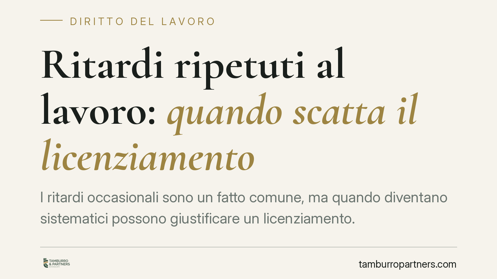

Ritardi ripetuti al lavoro: quando scatta il licenziamento
I ritardi occasionali sono un fatto comune, ma quando diventano sistematici possono giustificare un licenziamento. La linea di confine passa dalla proporzionalità tra condotta e sanzione e dal rispetto della procedura disciplinare. Vediamo cosa dice la normativa, quali elementi pesano nel giudizio e quali cautele valgono sia per il datore sia per il lavoratore coinvolto.

Il fatto e perché conta
Entrare spesso in ritardo non è, di per sé, motivo automatico di licenziamento. Ma la reiterazione dell'inadempimento cambia il quadro: un comportamento tollerabile se isolato può diventare rilevante sul piano disciplinare quando si ripete nel tempo e incide sull'organizzazione aziendale.
La questione tocca due nodi delicati: la gravità della condotta e il rispetto delle regole procedurali. Sbagliare su uno dei due espone il datore all'annullamento del licenziamento e il lavoratore alla perdita di tutele se non reagisce nei tempi.
Inquadramento normativo
Il licenziamento per motivi legati alla condotta del dipendente può fondarsi su due presupposti distinti.
La giusta causa è disciplinata dall'art. 2119 del codice civile: ricorre quando l'inadempimento è così grave da non consentire la prosecuzione, nemmeno provvisoria, del rapporto. In questo caso il recesso è immediato, senza preavviso.
Il giustificato motivo soggettivo (art. 3 L. 604/1966) presuppone invece un inadempimento notevole ma meno grave, che consente il licenziamento con preavviso. Ritardi reiterati, a seconda dell'intensità e delle conseguenze, possono rientrare nell'una o nell'altra categoria: non esiste un automatismo, ma una valutazione caso per caso.
La giurisprudenza consolidata ha chiarito che i ritardi abituali possono legittimare il recesso quando si traducono in una violazione degli obblighi contrattuali di rilievo. Resta però centrale il principio di proporzionalità: la sanzione deve essere adeguata alla gravità concreta del fatto.
Sul piano procedurale è imprescindibile l'art. 7 della L. 300/1970 (Statuto dei lavoratori), che impone la contestazione scritta e specifica dell'addebito, l'assegnazione di un termine per le giustificazioni (di norma non inferiore a cinque giorni) e la possibilità per il lavoratore di farsi assistere. L'inosservanza di questi passaggi rende il licenziamento illegittimo a prescindere dalla fondatezza dell'addebito.
Implicazioni pratiche
Per il datore di lavoro la valutazione non può fermarsi al numero dei ritardi. Rilevano elementi ulteriori: l'entità dei minuti accumulati, l'esistenza di precedenti richiami, l'impatto sull'attività, la sussistenza di eventuali giustificazioni, il ruolo del dipendente.
Un passaggio spesso trascurato è il CCNL applicabile: molti contratti collettivi graduano le sanzioni disciplinari in modo progressivo, prevedendo per i ritardi il richiamo verbale, l'ammonizione scritta, la multa e la sospensione prima di arrivare al licenziamento. Saltare gli scalini intermedi, in assenza di ritardi particolarmente gravi, può compromettere la legittimità del recesso.
Per il dipendente, la reazione al licenziamento è soggetta a termini rigorosi. L'inerzia comporta la decadenza dall'azione, con perdita definitiva della possibilità di contestare il provvedimento.
Cosa fare in concreto
- Verificare la proporzionalità: valutare la gravità concreta dei ritardi rispetto alla sanzione, tenendo conto di frequenza, entità e conseguenze organizzative.
- Consultare il CCNL: individuare la scala sanzionatoria prevista e accertare che la progressione disciplinare sia stata rispettata.
- Curare la procedura ex art. 7 L. 300/1970: la contestazione deve essere scritta, tempestiva e specifica, con termine adeguato per le giustificazioni.
- Documentare i precedenti: raccogliere richiami e provvedimenti anteriori è determinante per dimostrare la reiterazione e la coerenza del percorso disciplinare.
- Rispettare i termini di impugnazione: il licenziamento va impugnato entro 60 giorni con atto stragiudiziale scritto e, nei successivi 180 giorni, va depositato il ricorso giudiziale (art. 6 L. 604/1966). Il mancato rispetto anche di uno solo dei due termini determina la decadenza.
Il quadro
I ritardi sistematici possono legittimare il licenziamento, ma solo al termine di una valutazione che combina la gravità dell'inadempimento, il rispetto della gradazione sanzionatoria del CCNL e l'osservanza rigorosa della procedura disciplinare. Ogni scostamento da questi parametri sposta l'equilibrio a favore della parte che li ha subiti.
*Contributo informativo a cura di Tamburro & Partners - Avv. Giuseppe Tamburro. Non costituisce parere legale.*
Ogni storia di lavoro ha i suoi tempi.
Se gestisci HR e vuoi un confronto su contenzioso, ispezioni o licenziamenti, scrivi allo studio. Ti rispondiamo entro un giorno lavorativo.